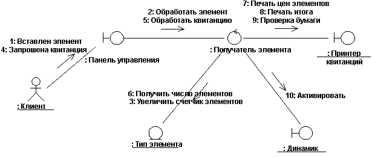
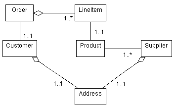

|
Создание реализации варианта использования анализа
|
Цель
|
Создание элемента моделирования, применяемого для описания поведения варианта использования.
|
На ранних этапах анализа и проектирования основное внимание уделяется вариантам использования. Переход между задачами,
направленными на требования, и задачами, направленными на анализ/проектирование, осуществляется с помощью объекта Рабочий продукт: Реализация варианта использования, который
предоставляет способ трассировки поведения от моделей анализа и проектирования обратно к модели вариантов
использования, а также организует кооперации, связанные с понятием варианта использования.
Если реализация варианта использования анализа не существует, создайте ее в модели анализа варианта использования. Имя реализации варианта использования анализа
должно совпадать с именем связанного варианта использования. Кроме того, между реализацией варианта использования
анализа и связанным вариантом использования следует создать взаимосвязь реализации.
Дополнительная информация о реализациях вариантов использования приведена в разделе Методика:
Реализация варианта использования.
|
Уточнение описания варианта использования
|
Цель
|
Получение дополнительной информации о внутреннем поведении системы, которая может отсутствовать в описании
варианта использования, написанном для заказчика системы.
|
Описание вариантов использования может быть недостаточным для поиска классов анализа и связанных объектов. В описаниях
вариантов использования информация о внутренней работе может отсутствовать, поскольку в большинстве случае заказчик
считает ее не заслуживающей внимания. Таким образом, описание варианта использования может быть аналогично описанию
'черного ящика', в котором сведения о реакции системы на действия субъекта отсутствуют или описаны слишком
поверхностно. Для того чтобы найти объекты, выполняющие вариант использования, требуется описание внутренних действий
системы в виде 'белого ящика'.
Пример
Для автоматического кассового аппарата (ATM) заказчик может предоставить следующее описание:
"ATM проверяет пластиковую карту клиента банка."
Эта информация описывает поведение системы, относящееся к идентификации пользователя. Хотя такое описание может быть
приемлемым для заказчика, оно не предоставляет фактической информации о внутренней процедуре проверки карты,
выполняемой ATM.
Для того чтобы представить внутреннюю картину работы системы с достаточным уровнем подробности для выявления объектов,
может потребоваться дополнительная информация. Если рассмотреть в качестве примера операцию проверки пластиковой карты,
то расширенное описание будет выглядеть следующим образом:
"ATM отправляет номер счета и PIN клиента для проверки в сеть ATM. Сеть ATM возвращает подтверждает
идентификационные данные клиента, разрешая продолжение транзакции, или отклоняет их."
Такой уровень подробности позволяет получить точное представление о требуемой информации (номер счета и PIN), а также
ответственных за идентификацию (сеть ATM - субъект в модели варианта использования). На основе этой информации можно
определить два потенциальных объекта (объект Клиент с атрибутами Номер счета и PIN, а также интерфейс сети ATM) и их
обязанности.
Проверьте описание варианта использования и убедитесь, что внутреннее поведение системы определено достаточно четко.
Описание внутреннего поведения системы должно быть лаконичным для лучшего представления выполняемых действий. Нет
необходимости описывать внутренние элементы системы (объекты), отвечающие за реализацию поведения - требуется только
четкое определение последовательности действий.
За подобной информацией рекомендуется обращаться к экспертам, которые могут описать работу системы. Кроме того,
рассматривая конкретное поведение системы, можно задать вопрос "какое значение для системы имеет это действие?". Если
на этот вопрос нельзя ответить, руководствуясь описанием действий системы по выполнению поведения, может потребоваться
дополнительная информация.
Ниже перечислены альтернативы дополнению описанию потока событий:
-
Не описывать его. Например, если диаграммы взаимодействия не требуют дополнительных пояснений или
достаточное описание представлено потоком событий соответствующего варианта использования.
-
Дополнить описание существующего потока событий. Уточните описания областей потока событий, которые
не позволяют получить четкое представление о действиях, выполняемых системой.
-
Описать его в качестве полного текстового потока независимо от описания внешнего потока событий варианта
использования. Например, если внутреннее поведение системы имеет мало общего с внешним поведением системы. В таких
случаях требуется отдельное описание, связанное с реализацией варианта использования анализа, а не самим вариантом
использования.
|
Поиск классов анализа в поведении варианта использования
|
Цель
|
Поиск потенциального набора элементов модели (классы анализа), подходящего для выполнения поведения,
описанного в вариантах использования.
|
Поиск потенциального набора классов анализа - это первый этап процесса преобразования системы из простого объявления
требуемого поведения в описание алгоритма работы системы. Для этой цели применяются классы анализа, описывающие роли
элементов модели, которые отвечают за поведение, необходимое для выполнения функциональных требований из вариантов
использования и дополнительных нефункциональных требований. По мере перехода к этапу разработки эти роли преобразуются
в набор элементов, реализующий варианты использования.
Роли, указанные в анализе вариантов использования, описывают поведение верхних уровней поведения системы/приложения и
домена. Пограничные и управляющие классы, как правило, развиваются в элементы проектирования уровня приложения, а
сущностные классы - в элементы проектирования домена. Элементы проектирования более низких уровней образуются из
механизмов анализа, применяемых классами анализа.
Описанная в этом разделе методика выявления потенциальных классов предусматривает применение трех различных перспектив
системы: граница между системой и субъектами, используемая системой информация и управляющая логика системы.
Соответствующие стереотипы классов (пограничные, сущностные и управляющие) - это вспомогательные элементы анализа,
которые исчезают в процессе проектирования.
Процедура выявления классов предусматривает их определение, присвоение имен и краткое описание.
Дополнительная информация по выявлению классов анализа приведена в разделе Методика: Класс
анализа. Дополнительная информация о реализациях вариантов использования анализа приведена в разделе Методика: Реализация варианта использования.
В частности механизмы и/или схемы анализа описаны в рекомендациях по проекту, которые можно рассматривать в качестве
дополнительного источника "вдохновения" в процессе выявления классов анализа.
|
Распределение поведения между классами анализа
|
Цель
|
Выражение поведения вариантов использования с учетом классов анализа. Определение обязанностей классов
анализа.
|
Для каждого независимого дочернего потока (сценария) выполните следующие действия:
-
Создайте одну или несколько диаграмм взаимодействия (связи или последовательности). Как правило, по крайней
мере одна диаграмма требуется для основного потока событий варианта использования и для каждого
альтернативного/исключительного потока. Отдельные диаграммы требуются для дочерних потоков со сложными расписанием
или точками принятия решений, либо для упрощения слишком длинных потоков, которые не помещаются на одной диаграмме.
-
Определите классы анализа, отвечающие за требуемое поведение, путем пошагового выполнения потока событий
сценария. Убедитесь, что требуемое поведение варианта использования описывается реализаций варианта использования
анализа.
-
Покажите взаимодействия между классами анализа на диаграмме взаимодействия. Кроме того, диаграмма
взаимодействия должна отражать взаимодействие между системой и субъектами (взаимодействия должны начинаться с
субъекта, поскольку варианты использования всегда вызываются субъектами).
-
Добавить классы, представляющие управляющие классы применяемых вариантов использования. (На отдельной
диаграмме взаимодействия покажите только альтернативное поведение расширяющего варианта использования.)

Диаграмма связи для варианта использования Получить взнос.
Если конкретные механизмы и/или шаблоны анализа были описаны в рекомендациях по проекту, их следует отразить при
распределении обязанностей, а также на конечных диаграммах взаимодействия.
|
Описание обязанностей
|
Цель
|
Описание обязанностей класса объектов, определенного на основе поведения варианта использования.
|
Обязанность - это описание предоставляемых объектом возможностей. В процессе обязанности проектирования преобразуются в
операции; их можно описать следующим образом:
-
действия, которые может выполнить объект
-
информация, обрабатываемая объектом и предоставляемая другим объектам
Каждый класс анализа должен содержать несколько обязанностей; класс с одной обязанностью может быть слишком простым, а
число обязанностей, превышающее десять, может выходить за рамки здравого смысла и потребовать разделения на несколько
классов.
Очевидно, что все объекты можно создавать и удалять произвольным образом; исключение составляют объекты, для которых
характерно специальное поведение при создании или удалении. (Некоторые объекты нельзя удалить при наличии конкретных
взаимосвязей.)
Поиск обязанностей
Обязанности извлекаются из сообщений на диаграммах взаимодействия. Для каждого сообщения проверьте класс объекта,
получающего это сообщение. Если обязанность еще не существует, создайте новую обязанность, описывающую соответствующее
поведение.
Остальные обязанности извлекаются из нефункциональных требований. При создании новой обязанности проверьте наличие
применимых связанных требований в наборе нефункциональных требований. Затем уточните описание существующей обязанности
или создайте новую.
Описание обязанностей
Обязанности описываются с помощью коротких имен (несколько слов) и краткого описания (несколько предложений). В
описании указываются действия объекта для выполнения обязанностей и возвращаемый результат.
|
Описание атрибутов и ассоциаций
|
Цель
|
Определение классов, от которых зависит класс анализа.
Определение событий в других классах анализа, которые должны быть известны данному классу.
Определение информации, за обработку которой отвечает класс анализа.
|
Обязанности класса по предоставлению требуемого поведения могут зависеть от других классов. Ассоциации описывают
взаимосвязи между классами и помогают понять особенности связывания классов; четкое понимание связываний классов, а
также их уменьшение по мере возможности позволяют повысить устойчивость разрабатываемых систем.
Следующие действия позволяют определить атрибуты классов и ассоциаций между ними:
Атрибуты применяются классом для хранения информации. В частности, в следующих случаях:
-
Если информация определяется значением; т.е. важным является только значение информации, а не ее расположение или
идентификатор объекта.
-
Если информация принадлежит только одному объекту; другим объектам эта информация недоступна.
-
Если информация обрабатывается операциями, которые только получают, задают или выполняют простые преобразования;
для информации не характерно другое поведение за исключением предоставления собственного значения.
С другой стороны, если информация имеет сложное поведение, доступна двум и более объектам или передается по ссылкам
между объектами, ее следует моделировать в качестве отдельного класса.
Имя атрибута должно быть существительным, четко описывающим хранимую в нем информацию.
Описание атрибута должно указывать на тип хранимой в нем информации; если тип информации можно определить исходя из
имени атрибута, то такое описание приводить не обязательно.
Тип атрибута - это просто тип данных атрибута. Примеры: строка, целое, число.
Начните с изучения ссылок на диаграммах взаимодействия, рассмотренных в разделе Распределение поведения между классами анализа. Ссылки
между классами указывают, что объекты двух классов взаимодействуют друг с другом в ходе выполнения варианта
использования. В процессе проектирования системы эти ссылки могут быть реализованы следующими способами:
-
Объект глобального уровня может получать сообщения от всех объектов системы.
-
Один объект может передаваться другому в качестве параметра; после этого он может получать сообщения от второго
объекта.
-
Между объектами может быть создана постоянная ассоциация для отправки сообщений.
-
Объект может быть создан и уничтожен в пределах области действия операции (временный объект); такие объекты
считаются локальными по отношению к операции.
На этом этапе жизни класса слишком рано принимать такие решения: для этого еще не получен достаточный объем информации.
В результате в ходе анализа создаются ассоциации и объединения, представляющие сообщения (а также передающие их),
которыми обмениваются два класса. (Объединение - это специальная форма ассоциации, в рамках которой объекты принимают
участие во взаимосвязи "целое/часть" (см. Методика:
Ассоциация и Методика: Объединение)).
Ассоциации и объединения уточняются в разделе Задача:
Проектирование классов.
Для каждого класса следует нарисовать диаграмму, отражающую ассоциации с другими классами:

Диаграмма с примером класса анализа, принадлежащего системе ввода заказов
Сконцентрируйтесь на ассоциациях, необходимых для реализации вариантов использования; добавляйте ассоциации только
после того, как убедитесь в их необходимости в соответствии с диаграммами взаимодействия.
Укажите для ассоциаций имена ролей и множественность.
-
Имя роли должно быть существительным, описывающим роль, выполняемую связанным объектом по отношению к
ассоциирующему объекту.
-
Рекомендуется применять множественность 0..* (произвольное количество), если отсутствуют явные доказательства
других вариантов. Нулевая множественность указывает на необязательную ассоциацию; в случае отсутствия объекта
потребуется соответствующее изменение операций, использующих ассоциацию.
-
При необходимости можно указать более узкие границы множественности (например, 3..8).
-
В пределах диапазонов множественности можно указать вероятности. Если множественность 0..* в диапазоне от 10 до 20
ожидается в 85% случаев, добавьте дополнительный комментарий; эта информация будет иметь большое значение в ходе
проектировки. Например, если постоянную память предполагается реализовать с помощью реляционной базы данных,
меньший диапазон позволит организовать таблицы базы данных.
Напишите краткое описание способа применения ассоциации, а также представляемых ей взаимосвязях.
В некоторых случаях объекты должны знать о событиях, возникающих в некоторых целевых объектах; при этом целевой объект
не должен знать все объекты, требующие уведомления о событии. Ассоциация подписки позволяет локанично описать такую
зависимость типа событие-уведомление.
Ассоциация подписки между двумя объектами указывает, что подписчик будет уведомлен о возникновении конкретного события
в целевом объекте. Ассоциация подписки содержит условие, описывающее событие, которое вызывает отправку
уведомлений. Дополнительная информация приведена в разделе Методика:
Ассоциация подписки
Условия ассоциации подписки выражаются в виде абстрактных характеристик, а не с помощью конкретных атрибутов или
операций. Таким образом, подписчик не зависит от содержимого исходного сущностного объекта, который может изменяться.
Ассоциация подписки необходима в следующих случаях:
-
если объект зависит от событий, возникающих в другом объекте
-
если объект создается для обработки события, например, выдача сообщения об ошибке пользователю
-
если объект должен отслеживать такие события, как создание экземпляра, изменение или уничтожение другого объекта
Как правило, роль целевых объектов подписки выполняют сущностные объекты. В большинстве случае сущностные объекты
представляют собой пассивные хранилища информации, поведение которых определяется обязанностями по хранению информации.
Изменения сущностных объектов могут иметь важное значение для множества объектов других типов. Ассоциация подписки
позволяет обеспечить работу сущностных объектов независимо от всех остальных объектов - подписчики просто регистрируют
свой интерес в сущностном объекте и получают уведомления в случае его изменения.
Пока что рассмотренный процесс представляет собой всего лишь уловку анализа - в ходе проектирования потребуется
определить точный способ работы такого механизма уведомления. Необходимо приобрести среду отправки уведомлений, либо
разработать ее самостоятельно. Однако на данном этапе достаточно ограничиться уточнением о существовании уведомлений.
Направление ассоциации указывает, что только подписчик знает о существовании взаимосвязи между двумя объектами.
Описание подписки указывается только со стороны подписчика. В свою очередь связанный сущностный объект определяется
обычным способом; без учета взаимодействия с другими объектами. Такой подход позволяет добавлять и удалять подписчиков,
не изменяя модель целевого объекта подписки.
|
Согласование реализаций вариантов использования анализа
|
Цель
|
Согласование отдельных реализаций вариантов использования анализа и определение набора классов анализа с
непротиворечивыми взаимосвязями.
|
Реализации вариантов использования анализа были разработаны в результате анализа конкретного варианта использования.
Теперь отдельные реализации вариантов использования анализа следует согласовать. Проверьте классы анализа и ассоциации, заданные для каждой реализации варианта
использования анализа. Устраните противоречия и удалите все дубликаты. Например, две реализации варианта использования
анализа могут содержать одинаковые классы анализа, которым разные проектировщики
присвоили различные имена.
Примечание: Качественная работа архитектора
программного обеспечения при определении начальной архитектуры (см. раздел Задача:
Архитектурный анализ) позволяет значительно снизить число совпадающих объектов в реализациях вариантов
использования анализа.
В процессе согласования элементов модели особое внимание следует уделить взаимосвязям между ними. В случае объединения
двух классов или замены одного класса другим новый класс должен заимствовать взаимосвязи исходного класса.
Архитектор программного обеспечения должен принимать участие в
согласовании реализаций вариантов использования анализа, поскольку этот процесс требует знания бизнес-контекста, а
также видения архитектуры программного обеспечения и проектирования для выбора классов анализа, позволяющих оптимальным
образом описать проблему и способы ее решения.
Дополнительная информация о классах приведена в разделе Методика: Класс
анализа.
|
Механизмы анализа качества
|
Цель
|
Определение механизмов анализа, применяемых классами анализа. Уточнение способов применения механизмов
анализа.
|
На этом этапе проверяются механизмы, применяемые к каждому классу анализа.
Если класс анализа применяет один или несколько механизмов анализа, то дополнительная информация, собранная на этом
этапе, поможет архитектору программного обеспечения и проектировщикам определить требования к механизмам архитектурного
проектирования. В число наиболее важных свойств входят число экземпляров класса анализа, их размер, частота доступа и
ожидаемое время жизни.
Для каждого применяемого механизма анализа укажите характеристики, которые должны учитываться при выборе механизмов
проектирования и реализации. Характеристики зависят от типа механизма; при необходимости допустимо задание диапазонов.
Поскольку различные архитектурные механизмы обладают разными характеристиками, данная информация носит исключительно
описательный характер; ее структура должна отвечать минимальным требованиям захвата и передачи информации. В процессе
анализа собирается в основном теоретическая информация, которая может потребоваться для уточнения оценок по мере
поступления дополнительной информации.
Применяемые классом механизмы анализа и связанные характеристики не обязательно описывать в соответствии с формальной
процедурой; как правило, для этой цели достаточно добавить примечание на диаграмму или дополнить описание класса.
Поскольку на этом этапе развития класса информация о характеристиках представляет собой теоретическую концепцию,
основное внимание уделяется описанию ожидаемых значений, а не оформлению определения механизма.
Пример
Характеристики механизма постоянного хранения класса Полет можно описать следующим образом:
Уровень дискретности: 2 - 24 Кб за полет
Объем: Не более 100000
Частота доступа:
-
Создание/удаление: 100 операций в час
-
Обновление: 3000 операций в час
-
Чтение: 9000 операций в час
Пример
Характеристики механизма постоянного хранения класса Миссия можно описать следующим образом:
Уровень дискретности: 2 - 3 Мб за миссию
Объем: 4
Частота доступа:
-
Создание/удаление: 1 операция в час
-
Обновление: 10 операций в час
-
Чтение: 100 операций в час
|
Задание трассируемости
|
Цель
|
Обеспечение взаимосвязей трассируемости между моделью анализа и прочими моделями.
|
Требования к трассируемости элементов модели анализа описаны в рекомендациях по проекту.
Например, в отдельной модели пользовательского интерфейса может быть полезной возможность трассировки между окнами и
прочими элементами пользовательского интерфейса и граничащими классами модели анализа.
|
Проверка результатов
|
Цель
|
Проверка соответствия объектов анализа и функциональных требований.
Проверка согласованности объектов анализа и взаимодействий.
|
По завершении работы проведите неформальную проверку для синхронизации и уточнения выводов процедуры Задача: Анализ вариантов использования.
Для рабочих продуктов, полученных в результате выполнения этой задачи, следует использовать справочную таблицу.
|
|